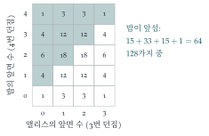

STEP I 2016, 문제 12
계속 읽기 전에 문제를 먼저 읽어 보자. 문제는 STEP Support Programme의 문제 데이터베이스에 있다: step.maths.org/questions/16-s1-q12
도입
밥은 앨리스보다 동전을 하나 더 던진다. 밥이 앞면을 더 많이 얻을 확률(probability)은 얼마일까? 밥이 유리하기는 하지만 앞면이 보장되는 것은 아니며, 비기는 경우는 밥에게 불리하게 처리된다. 처음 두 경우를 일일이 계산해 보면 두 번 모두 답이 \(\frac12\)이다. 이것은 우연일까?
우연이 아니다. 밥은 앨리스보다 앞면을 더 많이 얻거나 뒷면을 더 많이 얻되 둘 다는 아니라는 사실을 알아차리기만 하면, 한 문장으로 끝나는 증명(proof)이 있다. 이 문제는 계산이 어떻게 패턴을 암시하고, 교묘한 대칭(symmetry)이 그 패턴을 어떻게 설명하는지를 보여 주는 모범적인 예이다.
시작하기 전에
앨리스가 동전을 두 번 던질 때, 앨리스가 얻는 앞면의 개수의 분포(distribution)는 무엇인가? 밥이 세 번 던질 때는 어떠한가?
앨리스는 앞면을 \(0, 1, 2\)개 얻을 확률이 각각 \(\frac14, \frac24, \frac14\)이고, 밥은 \(0, 1, 2, 3\)개 얻을 확률이 각각 \(\frac18, \frac38, \frac38, \frac18\)이다.
차근차근 풀기
단계 1 직접 계산하기
소문항 (i)에서는 앨리스의 앞면 개수에 대하여 모두 더한다. \[\begin{aligned} \mathrm{P}(B > A) &= \tfrac14\,\mathrm{P}(B \geq 1) + \tfrac24\,\mathrm{P}(B \geq 2) + \tfrac14\,\mathrm{P}(B = 3) \\ &= \tfrac14\cdot\tfrac78 + \tfrac12\cdot\tfrac48 + \tfrac14\cdot\tfrac18 = \frac{7 + 8 + 1}{32} = \frac12. \end{aligned}\] 소문항 (ii)는 항이 더 많을 뿐 같은 계산이다. 같은 정도로 일어날 수 있는 \(8 \times 16 = 128\)가지 결과를 세어 보면 그중 \(64\)가지에서 밥이 앞서므로(그림 12.6.1), 이번에도 답은 \(\frac12\)이다.
단계 2 밥의 던지기를 나누기
밥의 \(n + 1\)번 던지기를 \(n\)번 던진 다음 한 번을 더 던지는 것으로 생각해 보자. 처음 \(n\)번을 던진 뒤 밥은 앨리스보다 앞서 있거나, 같거나, 뒤처져 있다. 각 경우에 어떤 일이 일어나는가?
둘 다 \(n\)번씩 던진 뒤, 밥이 앞서 있을 확률은 \(p_2\), 같을 확률은 \(p_1\), 뒤처져 있을 확률은 (앨리스와 밥 사이의 대칭에 의해) \(p_2\)이다. 밥이 앞서 있다면 계속 앞선다. 같다면 추가로 던진 동전으로 확률 \(\frac12\)로 앞서게 된다. 뒤처져 있다면 앞면이 하나 더 나와도 기껏해야 같아질 뿐이다. 따라서 \[\mathrm{P}(\text{밥이 앞면을 더 많이 얻음}) = p_2 + \tfrac12p_1.\] 세 경우가 모든 경우를 포괄하므로 \(2p_2 + p_1 = 1\)이고, 따라서 \(p_2 + \frac12p_1 = \frac12\)이다. 동전이 하나 더 있으면, 모든 \(n\)에 대하여 밥이 앞면을 더 많이 얻을 확률은 정확히 \(\frac12\)이다.■
한 문장 증명은 다음과 같다. 밥은 \(n + 1\)번 던지므로 앞면과 뒷면의 개수의 합이 \(n + 1\)로, 앨리스보다 하나 많다. 밥이 앨리스보다 앞면을 더 많이 얻는 것은 밥이 앨리스보다 뒷면을 더 많이 얻지 않는 것과 필요충분조건임을 보여라. 앞면과 뒷면은 대칭이므로 이 두 사건의 확률은 같고, 따라서 각각 \(\frac12\)이다.
실제로 \(H_A + T_A = n\), \(H_B + T_B = n + 1\)이라 쓰자. \(H_B > H_A\)이면 \(H_B \geq H_A + 1\)이므로 \(T_B = n + 1 - H_B \leq n - H_A = T_A\)이다. 역으로 \(T_B \leq T_A\)이면 \(H_B \geq H_A + 1\)이다. 따라서 “앞면이 더 많음”과 “뒷면이 더 많음”은 서로 여사건(complementary event)이고, 앞면과 뒷면을 맞바꾸면(동전이 공정하므로 확률은 변하지 않는다) 두 사건이 서로 맞바뀐다.

돌아보기
작은 경우를 계산하라. 두 번의 계산이 답 \(\frac12\)을 암시했다.
자연스러운 분할에 대해 조건을 걸어라(conditioning). 밥의 추가 던지기를 따로 떼어 내자 문제가 대등한 승부에 동전 하나를 더한 것으로 줄어들었다.
서로 여사건인 쌍을 찾아라. “앞면이 더 많음”과 “뒷면이 더 많음”은 서로 여사건이며, 대칭에 의해 서로 맞바뀐다.
숨은 수학
대칭과 여사건
이 깔끔한 증명은 두 가지 사실을 결합한다. 대칭에 의해 서로 맞바뀌는 두 사건은 확률이 같고, 서로 여사건인 두 사건은 확률의 합이 \(1\)이다. 두 조건이 모두 성립하면 각 사건의 확률은 \(\frac12\)이다. 같은 추론이 확률론 곳곳에 등장한다. 비행기 좌석 문제(12.5 절)에서 \(S_1\)과 \(S_n\)은 대칭에 의해 맞바뀌었고, 마지막에 남는 것은 정확히 둘 중 하나였다. 헥스(Hex) 게임에서는 판의 대칭성과 반드시 정확히 한 명이 이긴다는 사실로부터 선수가 유리함을 보일 수 있지만, 큰 판에서의 필승 전략은 아무도 모른다.
비길 확률은 얼마나 될까?
던지는 횟수가 같을 때는 비길 확률 \(p_1\)이 중요하다. 앨리스와 밥은 앨리스의 앞면 수가 밥의 앞면 수와 같을 때 비기는데, 이는 (대칭에 의해 밥의 앞면 수를 뒷면 수로 바꾸면) 앨리스의 앞면 수와 밥의 앞면 수의 합이 \(n\)일 확률, 즉 \(2n\)번 던져서 앞면이 모두 \(n\)개 나올 확률과 같다. 따라서 스털링(Stirling) 근사(12.23 절)를 이용하면 \[p_1 = \binom{2n}{n}\frac{1}{4^n} \approx \frac{1}{\sqrt{\pi n}},\] 이다. 비기는 일은 드물어지지만 그 속도는 느리다. 각자 \(100\)번씩 던져도 비길 확률은 여전히 약 \(5.6\%\)이다.
사고 기술
계산 결과가 의심스러울 만큼 단순한 답을 내면, 그 이유를 찾아라. 단순한 답에는 대개 단순한 설명이 있다.
대학에서는 이 습관이 이해와 계산을 가른다. 여기서 첫 번째 증명은 답을 확인해 주고, 두 번째 증명은 답을 설명하며 곧바로 일반화된다(연습문제 2를 풀어 보라).
더 도전하기
동전 두 개 더. 밥이 동전을 \(n + 2\)개, 앨리스가 \(n\)개 던질 때, \(H'\)을 밥의 처음 \(n + 1\)번 던지기에서 나온 앞면의 개수라 하면 \(\mathrm{P}(\text{밥이 앞면을 더 많이 얻음}) = \frac12 + \frac12\mathrm{P}(H' = H_A)\)임을 증명하여라.
편향된 동전. 두 사람 모두 앞면이 나올 확률이 \(p\)인 동전을 사용한다면, 한 번 더 던질 때 답은 여전히 \(\frac12\)인가? 깔끔한 증명의 어느 단계가 성립하지 않는가?
비기기. 본문의 요령을 이용하여 \(p_1 = \binom{2n}{n}/4^n\)임을 보이고, \(n = 1, 2, 3\)일 때 그 값을 계산하여라.
주사위. 앨리스는 주사위 \(n\)개를, 밥은 \(n + 1\)개를 던진다. 밥이 6의 눈을 더 많이 얻을 확률은 \(\frac12\)인가?
더 읽을거리
Peter Winkler, Mathematical Mind-Benders (A K Peters). 대칭을 이용한 풀이가 있는 확률 퍼즐이 많이 실려 있다.
Gabor Székely, Paradoxes in Probability Theory and Mathematical Statistics (Reidel). 확률론과 수리통계학의 역설.
Frederick Mosteller, Fifty Challenging Problems in Probability (Dover). 확률의 도전적인 문제 50선.